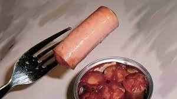

Sausages Recipe

Sausages! Looking good!
To continue our trend with easy to do meals for extra-lazy people, we now present sausages!
What? Where you expecting something else? I know i did my best with the squash pie but come on!
Ingredients:
- Sausages
- Water
- Smashed potatoes, rice, anything.
Steps:
- Boil water and add the sausages.
- Once they are swollen, serve in a plate.
- You can eat them with smashed potatoes, rice, or some bread and chips.
- The only step remaining is to enjoy!